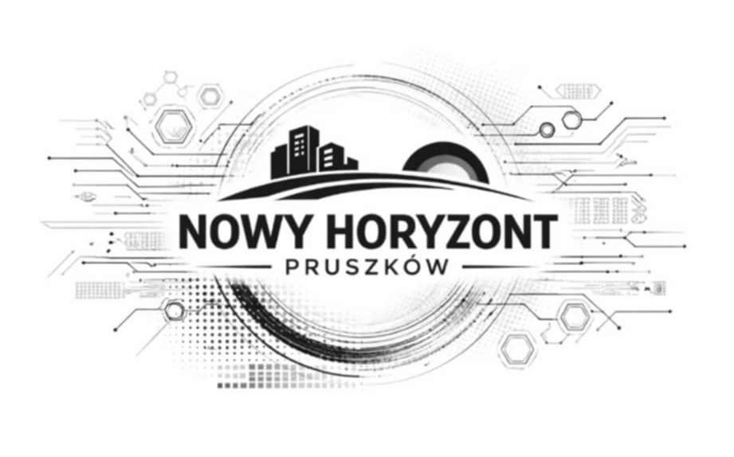

💻 Cyfrowe Miasto Urząd online Chcemy, aby większość spraw urzędowych można było załatwić przez internet. To pozwoli zaoszczędzić czas i ułatwi kontakt z urzędem. Aplikacja miejska Planujemy stworzyć aplikację do zgłaszania problemów i kontaktu z miastem. Ułatwi ona mieszkańcom dostęp do informacji i usług. Darmowe Wi-Fi Chcemy zapewnić darmowy internet w parkach i centrum miasta. To zwiększy komfort mieszkańców i nowoczesność przestrzeni publicznej. Przejrzystość władzy Stawiamy na większy dostęp do informacji o działaniach władz. Chcemy wprowadzić transmisje i publikację decyzji online. 🎓 Młodzież i Edukacja Nowoczesne szkoły Chcemy inwestować w nowoczesne wyposażenie szkół. Dzięki temu uczniowie będą mieli lepsze warunki do nauki. Programowanie i technologia Wspieramy naukę programowania i nowych technologii. To przygotuje młodych ludzi do przyszłości. Budżet młodzieżowy Chcemy wprowadzić budżet dla młodzieży. Pozwoli to młodym mieszkańcom mieć wpływ na miasto. 🌳 Zielone Miasto Więcej zieleni Planujemy sadzić więcej drzew i roślin. Dzięki temu miasto będzie zdrowsze i ładniejsze. Czyste powietrze Chcemy wprowadzać rozwiązania poprawiające jakość powietrza. To ważne dla zdrowia mieszkańców. Nowe place zabaw i parki Planujemy budowę i modernizację miejsc do odpoczynku. Dzięki temu mieszkańcy będą mieli więcej przestrzeni do spędzania czasu. 🚦 Transport i Infrastruktura Lepsze drogi Chcemy remontować i modernizować drogi. Poprawi to bezpieczeństwo i komfort jazdy. Więcej ścieżek rowerowych Planujemy rozwój ścieżek rowerowych. To bezpieczna i ekologiczna forma transportu. Inteligentna sygnalizacja Chcemy wprowadzić nowoczesne sterowanie światłami. Dzięki temu ruch będzie płynniejszy, a korki mniejsze. Mark 🏛 Tradycja i Społeczność Wsparcie lokalnych wydarzeń Chcemy wspierać festyny, wydarzenia i inicjatywy mieszkańców. Dzięki temu będziemy budować silną i zintegrowaną społeczność. Ochrona historii miasta Planujemy dbać o zabytki i lokalne dziedzictwo. Chcemy także promować historię miasta w nowoczesny sposób. Pomoc dla lokalnych firm Chcemy wspierać małe i lokalne przedsiębiorstwa. Dzięki temu rozwój miasta będzie oparty na lokalnej gospodarce.
📄 Zobacz prezentację